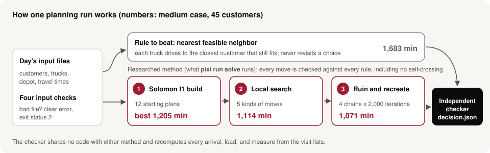

Every order in the edge case, against the largest truck
Route map
Each line is one truck's loop from the depot (black square) and back. Hover a line or a stop for details, or click a truck below to follow just that driver, with its stops numbered in visiting order. A dashed black line marks a route that crosses itself. Our method forbids that; the rule to beat does not.
Each truck's day
One row per truck, from the start of the shift to the shift end. Thin lines above each bar are the customers' time windows: service has to start inside them. Waiting is free in the brief's scoring, and driving is what we minimize.
Where the saving comes from
The researched method runs in three stages. The bars show the total travel after each one. The line chart shows the last stage, ruin and recreate: four independent searches, each removing and reinserting customers 2,000 times and keeping a change only if every rule still holds.
Total travel after each stage
Best plan found so far, 4 search chains
How it works
Both methods read the same files and write the same decision.json. An independent checker, sharing no code with either method, recomputes every number.

1Solomon I1 construction
Build routes by repeatedly inserting the customer, at the cheapest position, that adds the least travel and pushes later stops back the least. Twelve parameter settings give twelve starting plans.
2Local search
Try moving a run of 1–3 customers to another truck, swapping customers, exchanging route tails, and reversing segments. Keep a move only if it lowers travel and passes every check.
3Ruin and recreate
Remove 4–30% of the customers, reinsert them in a smarter order, and accept the result by simulated annealing. Four seeded chains, so a rerun gives exactly the same plan.
Stress test: what happens when traffic doesn't match the plan
Realized travel on 30 simulated days
Heavier traffic uses the same 30 saved days, with every leg scaled up. The plans themselves never change.